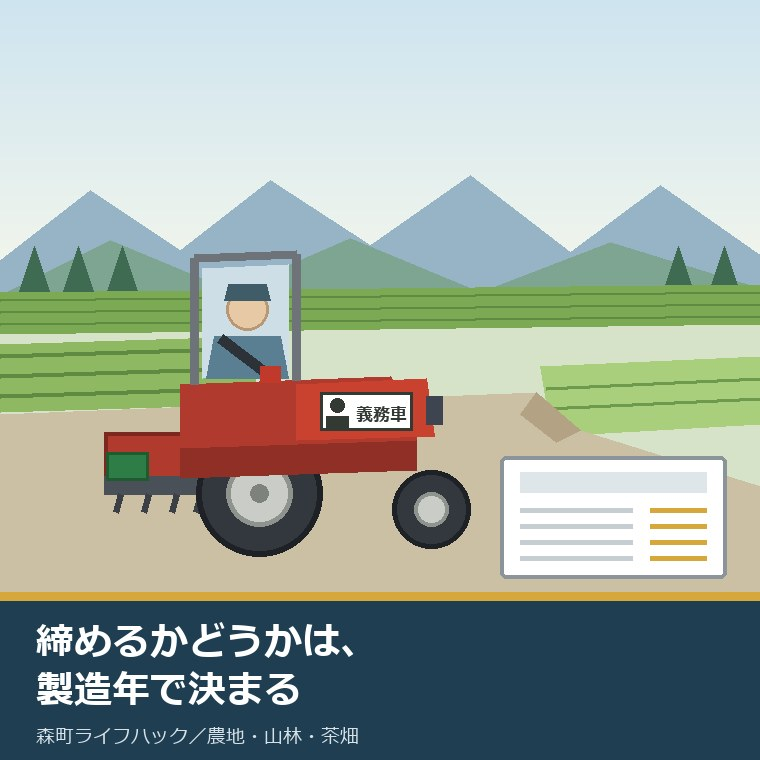
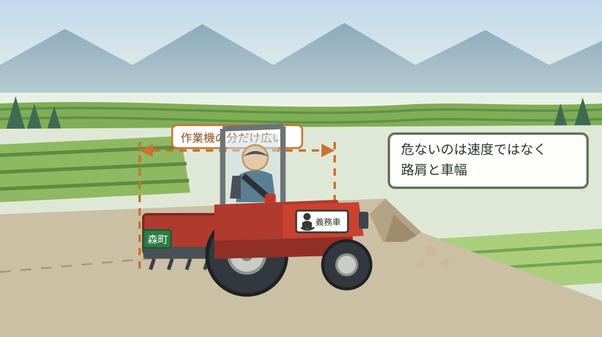
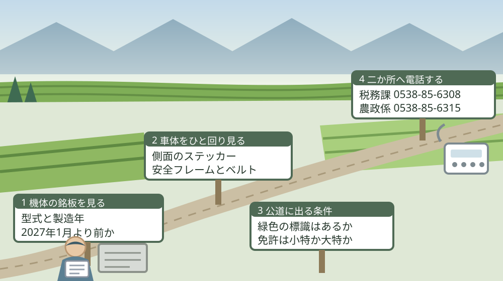

トラクターのシートベルト義務化、2027年1月製造分から

この記事の要点
Q. 森町の実家の畑を休みの日に手入れしています。トラクターで農道と公道を少し走ります。シートベルトが義務になると聞きましたが、いつからですか。
A. 令和9年（2027年）1月1日からです。ただし対象は、その日以降に製造された機体だけです。国土交通省は令和7年6月17日に道路運送車両の保安基準等を改正しました。農林水産省によれば、対象車で道路を走るときの着用義務違反は点数1点。今ある実家の機体は、この改正の対象外です。
静岡県周智郡森町（遠州森町）の実家の畑を、休みの日に手入れしている。トラクターに乗って、農道から少しだけ公道へ出る。この記事は、そういう方に向けて書いています。
週末だけの手入れは、続けるだけでたいへんです。草は待ってくれませんし、機械の点検は自分の生活の時間を削ります。私はこれを、軽い作業だとは思っていません。
その上で、2027年に一つ変わることがあります。トラクターのシートベルトが、法令上の義務になります。ただし、条件が付いています。
ここで取り違えやすいのが、「来年から実家のトラクターも義務になる」という読み方です。そうではありません。線は製造日で引かれています。
この記事では、国土交通省の報道発表と農林水産省の資料から確定できることを並べ、森町で公道を走る場面に重ねます。今ある機体が対象外だと分かった上で、それでも締める理由まで書きます。
公式情報から確定できること
2026年8月20日時点で、国土交通省、農林水産省、森町公式サイトから確認できた事実を並べます。出典は記事の末尾に載せています。
一つ目。改正の日付が確定しています。国土交通省の報道発表「ペダル踏み間違い時加速抑制装置の搭載を義務づけます！～道路運送車両の保安基準等の一部改正について～」は令和7年6月17日付で、公布・施行はいずれも令和7年6月17日（一部は同年6月23日、同年7月6日）とされています。
二つ目。トラクターの部分は、この報道発表の中にあります。同発表の「⑵ 農耕トラクタ等の特殊自動車の安全対策等」には、「令和６年８月に開催された農林水産省農作業安全検討会での検討の結果等を踏まえ、農耕トラクタの運転者席に座席ベルトを備えなければならないこととします。」と書かれています。
三つ目。適用の時期も同じ欄にあります。同発表は、この座席ベルトの規定について「【適用時期】新型車、継続生産車：令和９年１月１日」としています。新型車だけでなく、継続生産車も同じ日です。
四つ目。灯火器と後写鏡の話も同時に決まりました。同発表の「② 林野庁において推進している高性能林業機械の導入への対応として、大型特殊自動車及び小型特殊自動車に備える灯火器及び後写鏡については、一定の条件のもと、作業時に取り外しを可能とすることとします。」という項目です。
五つ目。着用の義務は、農林水産省が明示しています。同省の「トラクターのシートベルト着用義務化について」は「適用日以降に製造された乗用型トラクタで道路走行する際には、シートベルト着用が義務となります。」とし、「違反の場合、シートベルトの着用義務違反として、点数1点が付されます。」と書いています。
六つ目。対象車の範囲が、周知チラシで具体化されています。農林水産省の周知チラシ「乗用型トラクターでの道路走行時におけるシートベルト義務化」には、「令和9年1月1日以降に製造された座席を有するトラクタは、大型特殊自動車・小型特殊自動車に限らず対象車となります。」とあります。
七つ目。見分け方も書かれています。同チラシは「対象のトラクタには、ボンネット側面に座席ベルト着用義務車を示すステッカーが貼付されます。」としています。ステッカーの図柄は、人が座席ベルトを締めた姿と「座席ベルト着用義務車」の文字です。
八つ目。なぜこの改正が来たのかも示されています。農林水産省は「農耕作業用特殊車の道路上における死亡事故は転倒・転落によるものが多く、特に乗用型トラクタの死亡事故が多い状況です。」とし、シートベルトの着用が有効であることを受けて保安基準が改正された、と説明しています。
九つ目。事故の内訳が数字で出ています。同チラシによれば、農耕作業用特殊車における死亡事故類型別割合は、車両単独73パーセント（うち路外逸脱56パーセント、転倒3パーセント、その他14パーセント）、車両相互24パーセント（追突18パーセント、その他7パーセント）、その他3パーセントです。出典は交通事故総合分析センターのデータで、平成23年から令和2年までの1当2当合計とされています。
十番目。危険な場面も三つ挙げられています。同チラシは、トラクタでの道路走行時の危険因子として「左右独立ブレーキの連結忘れによる片ブレーキでの予期しない旋回」「作業機による車幅の変化や重心の変化」「凸凹道や狭路等、不安定な道路の走行」を挙げています。
十一番目。着用の効果が、数字で対比されています。同チラシによれば、農耕作業用特殊車における事故時のシートベルト着用状況別致死率は非着用18パーセント、着用2パーセントです。同じ交通事故総合分析センターのデータによる農林水産省の分析です。
十二番目。ただし条件が付いています。同チラシは「乗用型トラクタの路外逸脱・転倒事故における死亡・重傷リスクに対し、シートベルトを安全キャブ・フレームとセットで使用することが重要！」とし、着用により「安全キャブ・フレームによりつくられる安全域にとどまることができ、トラクターの下敷きになることを防ぐことができる。」と説明しています。
十三番目。直近の死亡事故の数も公表されています。農林水産省「令和6年に発生した農作業死亡事故の概要」によれば、令和6年の農作業事故死亡者数は287人で、前年より51人増加しました。厚生労働省の人口動態調査に係る死亡個票等を用いた集計です。
十四番目。その内訳に機械があります。同資料によれば、農業機械作業に係る事故は156人（農作業事故全体の54.4パーセント）で、農業用施設作業に係る事故は15人（同5.2パーセント）、それ以外の作業に係る事故は116人（同40.4パーセント）です。
十五番目。機種別では乗用型トラクターが最多です。同資料によれば、機械事故のうち「乗用型トラクター」が53人（機械事故全体の34.0パーセント）で最も多く、次いで農用運搬車26人（同16.7パーセント）、自脱型コンバイン17人（同10.9パーセント）です。
十六番目。原因も特定されています。同資料によれば、乗用型トラクターでは「機械の転落・転倒」が38人（当該機種による事故の71.7パーセント）で最も多くなっています。表2の内訳では、ほ場等からが28人（同52.8パーセント）、道路からが10人（同18.9パーセント）です。
十七番目。年齢の偏りも出ています。同資料によれば、令和6年の農作業死亡事故287人のうち65歳以上の高齢者は248人（86.4パーセント）、年齢階層別では80歳以上が122人（同42.5パーセント）、70から79歳が103人（同35.9パーセント）です。
十八番目。森町も、この改正を告知しています。森町公式サイトの「乗用型トラクタのシートベルト着用が義務化されます」は2026年7月1日更新で、周知チラシのPDF（2.5メガバイト）と写真2点を掲載しています。担当は農政係、電話は0538-85-6315です。
十九番目。森町でトラクターに付く標識も確認できます。森町公式の「軽自動車税について」に掲載された税額表によれば、小型特殊自動車（森町ナンバー）の税率は農耕作業用（緑色ナンバー）が年額2,400円、その他（フォークリフト等、緑色ナンバー）が年額5,900円です。ページの更新日は2026年8月4日です。
二十番目。手続きの窓口も明記されています。同ページは「原動機付自転車（125cc以下のバイク）、ミニカー及び小型特殊自動車の手続きは森町役場1階の税務課で行ってください」としています。担当は税務課町民税係、電話は0538-85-6308です。

この絵で描きたかったのは、危ないのは速度ではなく、路肩と車幅だという点です。時速十数キロでも、路肩が崩れれば車体は横へ倒れます。そのとき、体が座席にとどまっているかどうかが分かれ目になります。
森町で公道を走る場面に置き換えると、この改正は何を意味するか
ここからは、確認した事実を実際の場面に置き換えて考えます。私の見方が混じるので、事実と分けて読んでください。
まず、いちばん大事な線を引き直します。対象は「令和9年1月1日以降に製造された」機体です。実家に置いてある20年前、30年前のトラクターは、この改正では義務の対象になりません。
つまり、週末に実家の畑へ通っている方の大半にとって、2027年1月1日に変わることは何もありません。ここを取り違えると、慌てて買い替えの相談に行くことになります。
では、この記事に意味がないかというと、逆だと私は考えます。義務にならないからこそ、自分で決めるしかないからです。ここが、この改正のいちばん現実的な読みどころです。
次に、数字を私の商売の感覚に置き換えます。致死率が非着用18パーセント、着用2パーセント。同じ事故に遭ったとき、助かる側は82パーセントから98パーセントに動きます。
言い換えると、亡くなる確率が9分の1になる計算です。不動産の仕事で、費用ゼロで危険が9分の1になる対策を私は他に知りません。シートベルトが付いている機体なら、締める手間だけです。
面積や金額に置き換えるなら、森町で農耕作業用の小型特殊自動車にかかる軽自動車税は年額2,400円、月にすると200円です。この200円の中に、安全の費用は入っていません。締める判断は、税金でも補助でもなく、乗る人の側にあります。
そして、事故の起きる場所です。令和6年の乗用型トラクターの死亡事故53人のうち、転落・転倒が38人。そのうち道路からが10人です。ほ場からの28人に比べれば少ないですが、道路でも実際に起きています。
森町の農道を思い浮かべてください。片側が田へ落ちている区間、茶畑へ上がる勾配、離合できない幅の道。周知チラシが挙げる「凸凹道や狭路等、不安定な道路の走行」は、そのまま森町の日常の道です。
加えて、この改正には作業機を付けたままの移動という前提が隠れています。チラシは「作業機による車幅の変化や重心の変化」を危険因子に挙げています。畑から畑へ、機械を付けたまま移る。それが普通の動き方です。
良い点
この改正について、私が良いと考える点を三つ挙げます。順番に理由を書きます。
一つ目。根拠となる数字が先に公開されていることです。農林水産省は、致死率18パーセントと2パーセントの対比、死亡事故類型別の割合、危険因子の三つを、A4一枚のチラシに載せています。「決まったから守れ」ではなく、なぜ有効かを示してから来た改正です。
二つ目。対象車が一目で分かる形になっていることです。ボンネット側面にステッカーが貼付されるので、機体を見れば対象かどうかが分かります。中古で売り買いするときにも、この一枚が効きます。書類を探さずに判断できる仕組みは、現場では強いです。
三つ目。既販車を巻き込まなかったことです。今ある機体まで一律に義務化していたら、後付けの工事費と、フレームのない古い機体の扱いで現場が止まります。私はこの線引きを、現実的な判断として評価します。
付け加えると、森町が2026年7月1日にこの告知を町のページへ載せている点も、実務では効きます。国の資料は探さないと出てきませんが、町のページは農政係の電話番号と一緒に並んでいます。聞ける先が同じ画面にあるのは、それだけで違います。
注文したい点
その上で、一つの事業者として注文したい点も三つあります。批判ではなく、現場から見て足りないと感じる情報の話です。
一つ目。既販車にシートベルトを後付けする場合の扱いが分かりません。安全キャブや安全フレームのない古い機体に、ベルトだけを付けてよいのか。公表資料からは確認できませんでした。チラシは「セットで使用することが重要」と書いていますが、セットでない場合にどうすべきかは書かれていません。
二つ目。森町での対象車がいつごろ増えるのかが見えません。令和9年1月1日以降に製造された機体が町内に入るのは、買い替えのタイミング次第です。森町の乗用型トラクターの台数も、平均使用年数も、私は公表資料から確認できませんでした。
三つ目。週末だけ乗る人への案内が、どこにも見当たりません。国の資料も町のページも、農業者に向けて書かれています。実家の畑を手伝う子世代、年に数回だけ乗る人は、この改正の存在を知る経路がありません。
加えて、これは注文というより私の迷いです。ステッカーのない古い機体に乗り続けることを、私は否定できません。買い替えには数百万円かかります。それでも、統計は転落・転倒が最多だと言っている。この二つの間で、何をどう勧めるべきか、私はまだ答えを持っていません。

この図で示したかったのは、銘板を最初に見るということです。型式と製造年は、機体に書いてあります。役場にも販売店にも聞かずに、自分で確かめられる一つ目です。
対案・結論
では、今日できることを書きます。森町の実家の畑を手入れしている方が、今日のうちに終えられる範囲に絞ります。
まず、トラクターの銘板を見て、型式と製造年を書き写してください。多くは運転席の下かボンネットの内側にあります。写真を撮って残しておけば、次に販売店へ相談するときにそのまま使えます。
次に、座席にシートベルトが付いているかを確かめてください。付いているなら、今日から締めるだけです。付いていないなら、それも書き留めておきます。安全フレームや安全キャブがあるかも、同じ紙に書きます。
それから、ボンネットの側面を見てください。「座席ベルト着用義務車」のステッカーがあれば対象車です。無ければ、この改正の義務の対象ではありません。ただし、義務でないことと、締めなくてよいことは別です。
あわせて、車体後部の標識を確かめてください。森町の小型特殊自動車は緑色のナンバーで、農耕作業用は年額2,400円です。付いていない場合は、森町役場1階の税務課（電話0538-85-6308）で手続きができます。
この四つが、今日できる小さな一歩です。制度を覚える必要はありません。銘板、ベルト、ステッカー、標識。この順に見るだけで、自分の機体の状態が一枚の紙になります。
その上で、買い替えの結論は出さないでください。今日の成果は、機体の状態が分かったことだけで十分です。実家の農地そのものをどうするかは、田んぼや畑を相続したときに登記の先へ進む記事と米以外を作る前に産地交付金の条件を見る記事のほうに書きました。
家族に残す記録
相談を受けていて、いちばん困るのは、機械の情報が誰にも分からない状態です。実家に農機が残っているが、型式も年式も、どこで買ったかも分からない。この形が、片付けでも相続でも止まります。
残す項目を挙げます。機種、メーカー、型式、製造年、機体番号、購入した販売店、購入年、標識番号。ここまでが1枚目です。
続いて、安全にかかわる装備を書きます。安全フレームがあるか、安全キャブか、シートベルトが付いているか、座席ベルト着用義務車のステッカーがあるか。この四行が、乗ってよい機体かどうかの判断に直接効きます。
あわせて、手続きの状態を書きます。軽自動車税の申告は済んでいるか、標識は交付されているか、自賠責は必要な区分か、運転する人の免許は小型特殊か大型特殊か。紙の名前と日付をそのまま書いてください。
最後に、今日の日付と、確認に使った資料の名前を書いてください。制度も税額も変わります。いつ時点の話かが分かる記録だけが、来年も使えます。
大石の視点
ここからは、私の考えです。公表された事実とは分けて読んでください。
私は磐田市で小さな不動産の仕事をしていて、実家や農地をどうするか決めていない方の相談を一件ずつ受けています。森町の畑を、休みの日に子世代が手入れしている家は少なくないと思っています。草を止めているのは、たいていその人です。
同時に、このままでは続かないとも思っています。令和6年の農作業死亡事故287人のうち、65歳以上が248人。この数字は、乗っている人の年齢がそのまま出ています。担い手の高齢化は、事故の統計の側から先に見えます。
今回の改正について、私は賛成です。費用がほとんどかからず、致死率が18パーセントから2パーセントへ動く対策に、反対する理由がありません。ただ、義務化されるのは新しい機体だけです。
だから私は、この改正を「2027年の話」ではなく「今日の話」として読んでいます。締める習慣は、義務が来る前でも作れます。逆に、義務が来たあとで習慣を作るのは難しい。私はそう考えています。
ここには、私の商売の実感も混じっています。制度は知っている人だけが得をする。それが一番よくないと私は思っています。だからこの記事では、対象外の機体をお持ちの方にも読めるように書きました。
夏の畑仕事そのものの負担は八月の草を誰にいくらで頼むかの記事に、使っていない畑を放っておいたときに起きることは畑ほど獣の通り道になる記事にまとめてあります。どちらも、トラクターに乗る回数を左右する話です。
農地だけでなく、実家の名義、境界、道路まで含めて順に整理したい方は、ふじがおか実家カルテの森町相談窓口もご利用ください。売ると決めていなくても使える整理の道具として作っています。
まとめ
- 国土交通省の報道発表（令和7年6月17日）によれば、道路運送車両の保安基準等の改正で農耕トラクタの運転者席に座席ベルトを備えることとされた（2026年8月20日確認）
- 同発表によれば、座席ベルトの適用時期は新型車・継続生産車とも令和9年1月1日
- 同発表の公布・施行はいずれも令和7年6月17日（一部は同年6月23日、同年7月6日）
- 農林水産省によれば、適用日以降に製造された乗用型トラクタで道路走行する際にはシートベルト着用が義務となり、違反は点数1点
- 同省の周知チラシによれば、令和9年1月1日以降に製造された座席を有するトラクタは大型特殊自動車・小型特殊自動車に限らず対象車となる
- 同チラシによれば、対象のトラクタにはボンネット側面に座席ベルト着用義務車を示すステッカーが貼付される
- 同チラシによれば、農耕作業用特殊車の死亡事故類型別割合は車両単独73パーセント（路外逸脱56パーセント、転倒3パーセント）、車両相互24パーセント、その他3パーセント
- 同チラシによれば、事故時の致死率は非着用18パーセント、着用2パーセント
- 同チラシは、シートベルトを安全キャブ・フレームとセットで使用することが重要とし、安全域にとどまることで下敷きになることを防げるとしている
- 農林水産省「令和6年に発生した農作業死亡事故の概要」によれば、令和6年の農作業事故死亡者数は287人で前年より51人増加
- 同資料によれば、農業機械作業に係る事故は156人（全体の54.4パーセント）で、機種別では乗用型トラクターが53人（機械事故の34.0パーセント）と最多
- 同資料によれば、乗用型トラクターでは「機械の転落・転倒」が38人（当該機種の71.7パーセント）、内訳はほ場等から28人、道路から10人
- 同資料によれば、65歳以上の死亡者は248人（全体の86.4パーセント）、80歳以上は122人（同42.5パーセント）
- 森町公式「乗用型トラクタのシートベルト着用が義務化されます」は2026年7月1日更新で、周知チラシを掲載（担当は農政係・電話0538-85-6315）
- 森町公式の軽自動車税の税額表によれば、小型特殊自動車のうち農耕作業用（緑色ナンバー）は年額2,400円、その他（フォークリフト等）は年額5,900円
- 森町公式によれば、小型特殊自動車の手続きは森町役場1階の税務課（町民税係・電話0538-85-6308）で行う
よくある質問
Q1. 実家にある今のトラクターも、2027年1月からシートベルトが義務になりますか。
A1. 農林水産省によれば、義務の対象は令和9年（2027年）1月1日以降に製造された乗用型トラクタです。それ以前に製造された機体は、この改正による着用義務の対象ではありません。対象車にはボンネット側面に「座席ベルト着用義務車」を示すステッカーが貼付されると案内されています。
Q2. シートベルトを締めずに公道を走ると、どうなりますか。
A2. 農林水産省の周知チラシによれば、シートベルトの着用義務違反として点数1点が付されます。対象となるのは令和9年1月1日以降に製造された座席を有するトラクタで、大型特殊自動車・小型特殊自動車の区分に限らず対象車となる、と示されています。
Q3. シートベルトを締めると、かえって危なくないですか。
A3. 農林水産省の周知チラシは、シートベルトを安全キャブ・フレームとセットで使用することが重要だとし、着用により安全域にとどまってトラクターの下敷きになることを防げると説明しています。同省の分析では、事故時の致死率は非着用18パーセント、着用2パーセントです。
最後に一つだけ。ここに書いた適用日、対象車の範囲、点数、統計、税額、窓口は、いずれも2026年8月20日時点で公表されている内容です。既販車にシートベルトを後付けする場合の可否と費用、安全フレームのない機体での取扱い、森町内の乗用型トラクターの台数、対象車が町内に入る時期、個別の機体が大型特殊自動車と小型特殊自動車のどちらに当たるかは、公表資料からは確認できていません。動く前に、必ず機体の販売店および森町役場の農政係（電話0538-85-6315）へご確認ください。
参考にした公式情報
- トラクターのシートベルト着用義務化について／農林水産省（「農耕作業用特殊車の道路上における死亡事故は転倒・転落によるものが多く、特に乗用型トラクタの死亡事故が多い状況です。」「このような死亡事故において、シートベルトの着用が有効であることを受け、道路運送車両の保安基準が改正されました。（適用日：令和9年1月1日）」「適用日以降に製造された乗用型トラクタで道路走行する際には、シートベルト着用が義務となります。違反の場合、シートベルトの着用義務違反として、点数1点が付されます。」と書かれていること、周知チラシ「乗用型トラクターでの道路走行時におけるシートベルト義務化」（PDF 1,296KB）がおもて面・うら面で掲載されていること、問合せ先が農産局技術普及課生産資材対策室（ダイヤルイン03-6744-2107）であることを2026年8月20日に確認）
- 乗用型トラクターでの道路走行時におけるシートベルト義務化（周知チラシ・PDF）／農林水産省（おもて面に「道路運送車両の保安基準改正により、乗用型トラクタで道路を走行する際には、シートベルト着用が義務化されます。」「※令和7年6月17日公布」「義務化はいつから？ 令和9年1月1日からです。」「令和9年1月1日以降に製造された座席を有するトラクタは、大型特殊自動車・小型特殊自動車に限らず対象車となります。」「対象のトラクタには、ボンネット側面に座席ベルト着用義務車を示すステッカーが貼付されます。」「違反した場合は？ シートベルトの着用義務違反として、点数1点が付されます。」と書かれていること、うら面に「農耕作業用特殊車の死亡事故は車両単独による路外逸脱・転倒が多く、特に乗用型トラクタの死亡事故が多い状況。」とあり、死亡事故類型別割合が車両単独73パーセント（路外逸脱56パーセント、転倒3パーセント、その他14パーセント）、車両相互24パーセント（追突18パーセント、その他7パーセント）、その他3パーセントと図示されていること（交通事故総合分析センターのデータより農林水産省分析、平成23年〜令和2年、1当2当合計）、道路走行時の危険因子として「左右独立ブレーキの連結忘れによる片ブレーキでの予期しない旋回」「作業機による車幅の変化や重心の変化」「凸凹道や狭路等、不安定な道路の走行」が挙げられていること、「乗用型トラクタの路外逸脱・転倒事故における死亡・重傷リスクに対し、シートベルトを安全キャブ・フレームとセットで使用することが重要！」とされ、「シートベルトを着用することで安全キャブ・フレームによりつくられる安全域にとどまることができ、トラクターの下敷きになることを防ぐことができる。」と説明されていること、事故時のシートベルト着用状況別致死率が非着用18パーセント・着用2パーセントと図示されていることを2026年8月20日に確認）
- ペダル踏み間違い時加速抑制装置の搭載を義務づけます！～道路運送車両の保安基準等の一部改正について～（PDF）／国土交通省（発表が令和7年6月17日付で物流・自動車局車両基準・国際課および審査・リコール課によること、「⑵ 農耕トラクタ等の特殊自動車の安全対策等」の①に「令和６年８月に開催された農林水産省農作業安全検討会での検討の結果等を踏まえ、農耕トラクタの運転者席に座席ベルトを備えなければならないこととします。」とあり適用時期が「新型車、継続生産車：令和９年１月１日」とされていること、②に「林野庁において推進している高性能林業機械の導入への対応として、大型特殊自動車及び小型特殊自動車に備える灯火器及び後写鏡については、一定の条件のもと、作業時に取り外しを可能とすることとします。」とあること、公布が令和7年6月17日、施行が令和7年6月17日（一部、同年6月23日、同年7月6日）であることを2026年8月20日に確認）
- 農作業死亡事故調査／農林水産省（「令和6年に発生した農作業死亡事故の概要」が掲載され、厚生労働省の「人口動態調査」に係る死亡個票等を用いて令和6年1月1日から12月31日までの農作業死亡事故を取りまとめたものであること、令和6年の農作業事故死亡者数が287人で前年より51人増加したこと、農業機械作業に係る事故が156人（農作業事故全体の54.4パーセント）、農業用施設作業に係る事故が15人（同5.2パーセント）、それ以外の事故が116人（同40.4パーセント）であること、機種別では「乗用型トラクター」が53人（機械事故全体の34.0パーセント）と最も多く次いで農用運搬車26人・自脱型コンバイン17人であること、乗用型トラクターでは「機械の転落・転倒」が38人（当該機種による事故の71.7パーセント）と最も多く表2の内訳がほ場等から28人・道路から10人であること、65歳以上の高齢者の事故が248人（同86.4パーセント）、年齢階層別で80歳以上が122人（同42.5パーセント）・70〜79歳が103人（同35.9パーセント）であることを2026年8月20日に確認）
- 乗用型トラクタのシートベルト着用が義務化されます／静岡県森町（令和9年1月1日から、その日以降に製造されたトラクタで道路を走行する際にシートベルト着用が義務となること、違反の場合は点数1点が付されること、周知チラシのPDF（2.5MB）と写真2点が掲載されていること、担当が農政係（電話0538-85-6315）であることを2026年8月20日に確認。更新日 2026年07月01日）
- 軽自動車税について／静岡県森町（軽自動車税が「原動機付自転車、軽自動車、小型特殊自動車および二輪の小型自動車の所有者にかかる税金」であること、毎年4月1日現在で町内に軽自動車等を所有している人が納税義務者であること、「原動機付自転車（125cc以下のバイク）、ミニカー及び小型特殊自動車の手続きは森町役場1階の税務課で行ってください」と案内されていること、掲載の税額表で小型特殊自動車（森町ナンバー）の農耕作業用（緑色ナンバー）が年額2,400円、その他（フォークリフト等、緑色ナンバー）が年額5,900円とされていること、担当が税務課町民税係（電話0538-85-6308）であることを2026年8月20日に確認。更新日 2026年08月04日）

最終確認日：2026-08-20 ／ 本記事は公表情報と執筆者の見解を分けて記載しています。既販車へのシートベルト後付けの可否と費用、安全フレームのない機体での取扱い、森町内の乗用型トラクターの台数、個別の機体の自動車区分は公表資料から確認できていません。個別の機体の適合判断は製造者・販売店および所管の窓口によります。動く前に、必ず機体の販売店および森町役場の農政係（電話0538-85-6315）へご確認ください。